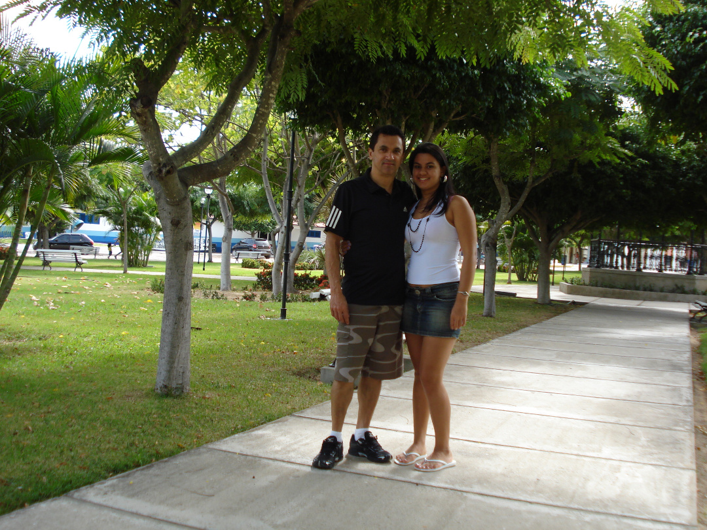

Como sempre, a viagem tinha como propósito principal rever meus familiares, especialmente minha mãe, que se mantinha firme e forte. Eu já morava sozinho há quatro anos e a saudade apertava. Apesar de cinco anos terem se passado desde a última visita, quando fui com Rodrigo, as coisas não mudaram muito por lá.
Rever minha mãe era uma necessidade, quase um ritual que trazia alívio para a saudade acumulada. Ela continuava com a mesma força de espírito que sempre admirei, e estar com ela novamente renovava minhas energias. A familiaridade do lugar e das pessoas me trazia uma sensação reconfortante de estabilidade em um mundo que parecia mudar rápido demais.
Cada momento com a família era precioso, repleto de conversas, risadas e histórias compartilhadas. Apesar de não ter sido tanto tempo desde a última visita, cada reencontro era uma reafirmação dos laços que nos uniam e que, apesar da distância, permaneciam inquebrantáveis.
